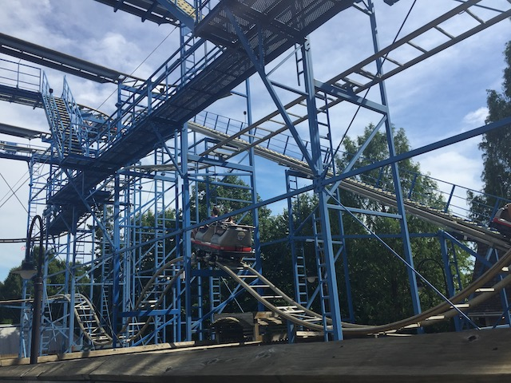

| |
Wild Mouse Review

We're here at Hersheypark where we'll reveiwing Wild Mouse. After getting in the seats and pulling down the lap bar, you go up the lifthill. Up, up, and up you go. Near the top, if you turnaround, you can get a nice shot of the switchbacks on Wild Mouse as well as a nice view of the Boardwalk. Then once we get to the top, you get whipped around a turn and set into the switchbacks. The switchbacks are fun because those turns are just great. It really whips you. And on Wild Mouse, It can whip you due to the turns actually being flat. Then after going through the set of switchbacks, you are set off into a nice big turn that just pins you to the side the entire time. Then unfortunetly, there are some trim brakes before the big drop, but that's ok. Then you turnaround only to go through the rides biggest drop. While it's not a very big drop. It's still fun. Then you meet another set of trim brakes, Then you come through another turnaround where we head towards the end of the ride. after another small drop, we head into the extra hump. Now actually, this hump is found on many Wild Mouse rides around the world, but because Goofy's Sky School doesn't have it, it is always refered to as the extra hump that Goofy's Sky School doesn't have. The extra hump is alot of fun and definetly something that should be on all Wild Mice. At this point, pretty much over as we turn into a final dip into the brake run. While Wild Mouse isn't too special, I still find it as a good Wild Mouse as the turns are flat, the drops are fun, there arn't too many brakes, and most importantly, THE EXTRA HUMP IS HERE!!! If you've been on a clone of it, I'd recommend skipping it. But if you're only limited to Arrow Mice, Goofy's Sky School, or have never ridden a Wild Mouse at all, I'd highly recommend riding it.
6/10
Location: Hersheypark
Opened: 1999
Built by: Mack
Last Ridden: June 25, 2021
I have ridden this exact same ride at the following parks.
Bakken
Carowinds
Movie Park Germany
Nagashima Spaland
Wild Mouse Photos


Home
|